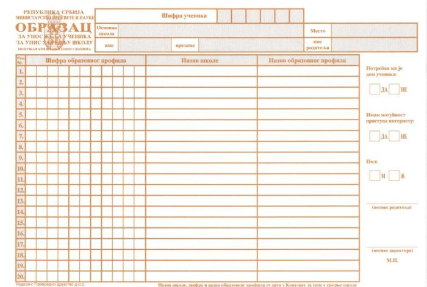

Упис 2018/2019
Више о упису за ово школску годину прочитај сада
Сви ученици који заврше основну школу и положе завршни испит могу да упишу средњу школу
Термини свих предуписних и уписних активности сачињавају КАЛЕНДАР уписа.
Календар активности за спровођење завршног испита за школску 2017/2018. годину и уписа ученика у средњу школу за школску 2018/2019.- ПРЕУЗМИ
Конкурс за упис ученика у школску 2018/19. годину биће објављен сходно закону до 31. марта 2018. године.
Рангирање ученика приликом уписа у средњу школу&нбсп; врши се на основу бодова остварених успехом током школовања (максимално 60) и бодова стечених на малоj матури (максимално 40). Испити из српског и математике носи по 13 бодова, а комбиновани тест 14 бодова.
Нови правилник о бодовању за упис у средњу најавила је помоћница министра просвете Весна Недељковић.
За упис у специјализоване средње школе приликом рангирања узимају се и бодови које су ученици стекли учествовањем и освајањем награда на неком од такмичења на државном или међународном нивоу.
Ученици могу да стекну и додатне бодове, ако су освајали награде на такмичењима из предмета у осмом разреду.
Успеси на међународним такмичењима носе:
Успеси на републичким такмичењима носе:
Уколико ученик оствари више награда из истог предмета, рачуна се она на којој је освојио више бодова.
Приликом рангирања, ако ученици имају исти број бодова, предност има онај који је носиоц дипломе “Вук Караџић”, затим онај који је освојио више награда на такмичењима и на крају они који су освојили више бодова на завршном испиту.
Након положеног завршног испита ученик израчунава броја бодова које је освојио и попуњава ЛИСТУ ЖЕЉА.

Листу би требало пажљиво да попуниш и то тако што ћеш на прво место навести образовни профил који би највише волео да упишеш, у складу са бодовима које си освојио у претходном школовању и бодовима које си освојио на завршном испиту. Од те прве и највеће жеље уписујеш редом следеће образовне профиле које желиш, али не без икаквог реда већ од већег ка мањем интересовању.
Обавезно, прво уписуј профиле са четворогодишњим школовањем, а затим са трогодишњим школовањем. У супротном, десиће ти се да будеш распоређен у неку трогодишњу школу, а имао си бодове за четворогодишњу која је била следећа на твојој листи жеља.
Није препоручљиво да уписујеш школе за које уопште ниси заинтересован, јер те компјутер на основу твојих бодова и места школе на ранг листи, може распоредити баш у ту школу.
У конкурсу испред сваког образовног профила/школе, постоји шифра тог образовног профила.
Ту шифру уписујеш у листу жеља на месту где је то предвиђено обрасцем. Шифру уписуј онако како је написана у конкурсу. Шифра је писана латиницом, те је тако мораш уписати у образац.
Најчешће грешке које ученици праве у избору школе:
Након објављивања списка и сазнања ко је коју школу уписао, следећи корак је предаја докумената за упис у средњу школу.
Након објављивања списка и сазнања ко је коју школу уписао, следећи корак је предаја докумената за упис у средњу школу.
© 2018. Техничка школа Младеновац | Сва права задржана.